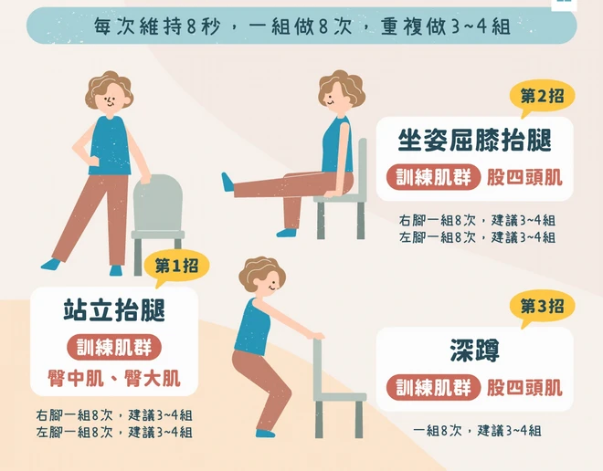
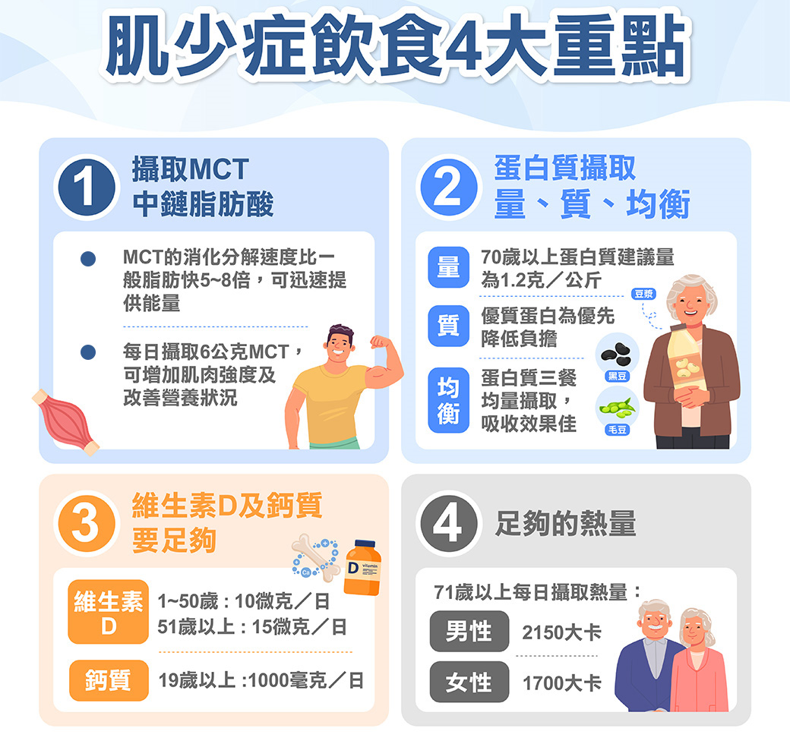
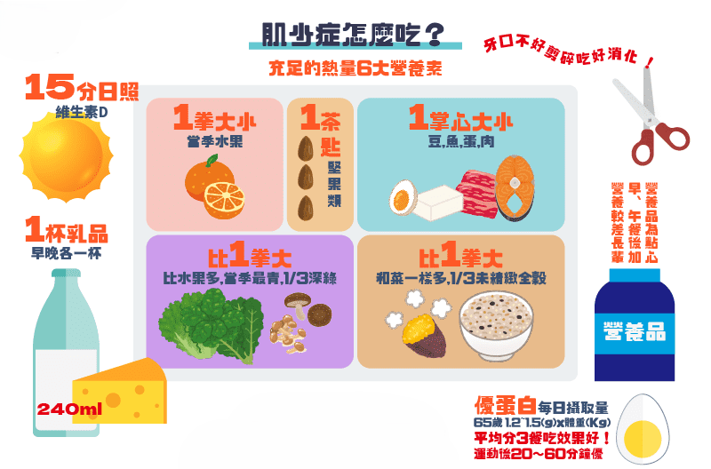

運動與飲食建議
從訓練與營養雙管齊下，強化您的肌力與功能
居家運動與飲食建議專區
💪 運動指南：居家訓練菜單
對抗肌少症的關鍵是肌力訓練，建議每週進行 2–3 次，動作應緩慢、穩定，並量力而為。

| 運動 | 目的 | 建議次數 |
|---|---|---|
| 深蹲（椅子輔助） | 訓練腿部肌力，預防跌倒 — 使用穩固椅子，背打直 | 8–12 下 × 3–4 組 |
| 抬腳（坐姿伸腿） | 訓練大腿前側肌 — 伸直腳、停一秒 | 每腳 8 下 × 3–4 組 |
| 靠牆伏地挺身 | 訓練手臂與胸肌 — 身體順直、手略微外開 | 8–10 下 × 3–4 組 |
| 踝關節訓練 | 改善平衡 — 腳尖前後點地、左右點地 | 20 秒 × 3–4 組 |
| 握力訓練（握球或水瓶） | 增加手部肌力，提升抓握能力 | 每手 10–15 次 |
平衡與有氧訓練
除了肌力訓練，每週也應搭配 150 分鐘中等強度有氧運動（如快走、游泳）以及平衡訓練（如單腳站立），以預防跌倒。
🍽️ 飲食指南：高蛋白與維生素 D

足夠的營養攝取是維持肌肉量的基石。以下為實用建議：
蛋白質建議： 每公斤體重每日至少 1.2–1.5 g。例：60 kg → 每日 72–90 g。每餐至少 1–2 份高蛋白食物（雞蛋、豆腐、魚、雞胸、乳製品）。
✔ 優格＋堅果
✔ 豆漿／牛奶
✔ 煎蛋／蒸蛋／煮蛋
✔ 足夠水分（避免脫水影響肌力）
✔ 維生素 D（協助肌肉功能）
關鍵營養素餐盤建議

- 蛋白質： 建議成人每日攝取量為 1.2–1.5 g/每公斤體重（長者或高風險者可取上限）。
- 分散攝取： 將每日蛋白質平均分配到三餐，以優化肌肉合成。
- 優質來源： 魚、肉、蛋、奶、豆製品。
- 維生素 D： 可透過鮭魚、蛋黃、牛奶或適度曬太陽獲取，有助肌肉與骨骼健康。
常見食物蛋白質含量 (每份)
| 食物 | 份量參考 | 蛋白質含量 (約) |
|---|---|---|
| 雞蛋 | 1 顆 | 7 克 |
| 肉類（瘦肉） | 3 指幅大小/約 35 克 | 7 克 |
| 牛奶/豆漿 | 240 毫升 | 8 克 |
| 豆腐 | 1/4 盒 | 7 克 |